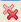

From RTSC-Pedia
 | [printable version] [offline version] | offline version generated on 02-Oct-2009 22:10 UTC |
Real-Time Analysis Tools
Using RTA Tools in CCSv4
CCSv4 provides a number of Real-Time Analysis (RTA) tools for use with RTSC-enabled applications, including DSP/BIOS applications. These tools provides raw log information as well as execution and load graphs in real-time (while the target is running).
Contents |
To open a tool, choose Tools > RTA from the CCStudio menu bar. This shows a list of the available graphs and tables provided for real-time analysis. You may open RTA tools in CCStudio at any time, typically just before running the target application or while the application is running.
In order to use RTA tools, your application must be configured to include support for RTA. DSP/BIOS 6 includes an RTA "Agent" module, ti.sysbios.rta.Agent, which retrieves Log data from the target and sends it to the host.
In addition to the RTA tools, the Runtime Object Viewer (ROV) is a stop-mode debugging tool provided by XDCtools. You can use ROV with RTSC-enabled applications to see state information about all the modules in your application.
The sections that follow briefly introduce the RTA tools.
RTA Control Panel
The RTA Control Panel lets you see and set what type of logging is performed at run-time. You can open this panel by choosing Tools > RTA > RTA Control Panel from the CCStudio menu bar.
In general, you should avoid modifying log settings unless you are familiar with the effects that change will have.
You can expand the log type categories to see log settings for various types of tracing. For information about the trace types, see the xdc.runtime.Diags documentation.
The RTAAgentLogger category lets you see the ti.sysbios.rta.Agent module logging. You should not disable this type of logging if you want to use the RTA tools.
The RTASystemLog category lets you see logging for a number of thread-related DSP/BIOS modules that may be enabled in your application. These include the Hwi, Swi, Task, Idle, Clock, Event, Semaphore, and Timer modules. The RTA tools described in the following sections require that RTASystemLog logging is enabled for User1 and User2.
The RTALoadLog category lets you see logging for the ti.sysbios.utils.Load module. If you disable User4 logging for this module, you will not be able to use the CPU Load tool.
To set a log type, click to the right of the checkbox and select RUNTIME_OFF or RUNTIME_ON.
The RTA Control Panel contains the following toolbar icons:
 Close all RTA tools, including this one.
Refresh view of settings by getting the current runtime settings from the target application.
Automatically fit the columns to their current contents.
Expand all nodes in the Logger Buffer column.
Collapse all nodes in the Logger Buffer column.
Set duration (in minutes) for RTA data streaming from the target. The default is to stream as long as the target application is running.
Toggle data streaming from the target on or off. The default is on.
Raw Logs
By default, the Raw Logs tool displays complete unformatted log data. The default columns displayed are: time, seqID, arg1...arg4, formattedMsg, and currentThread. You can open this tool by choosing Tools > RTA > Raw Logs from the CCStudio menu bar.
This table displays all the log records that have been sent from the target. This contains all the records used by the RTA tools to populate their graphs and tables. In addition, the following types of logs are also shown:
- Any Log records from other modules
- Any user-defined Logs or Log_print*() calls
This tool contains the following toolbar icons:
Toggle view with group setting on and off. (Shift+G)
Open the Find In dialog for searching this log.
Open the Set Filter Expression dialog for filtering the log records to match a pattern.
 Pause data updates from the target. This is useful when you are using the Find or Filter dialogs. (Shift+F5)
Pause data updates from the target. This is useful when you are using the Find or Filter dialogs. (Shift+F5)
Automatically fit the columns to their current contents.
 Refresh data from the target. This is useful if you have stopped data streaming or paused updates.
Refresh data from the target. This is useful if you have stopped data streaming or paused updates.
Toggle data streaming from the target on or off. The default is on.
"Groups" in the RTA views refers to synchronizing the views so that moving around in one view causes similar movement to happen automatically in another. For example, if you group the CPU load graph with Raw Logs, then if you click on the CPU Load graph, the Raw Log displays the closest record to where you clicked in the graph.
You can right-click on this tool to choose from a menu of options. In addition to some of the toolbar commands, you can use the following additional commands from the right-click menu:
- Column Settings. This command opens a dialog that lets you hide or display various columns. You can also change the alignment, font, and display format of a column (for example, decimal, binary, or hex).
- Copy. This command copies the selected text to the clipboard.
- Data > Export Selected. This command lets you select a .csv (comma-separated value) file to contain the selected data.
- Data > Export All. This command lets you select a .csv (comma-separated value) file to contain all the data currently displayed in the log.
- Groups. This command lets you define groups to contain various types of log messages.
Printf Logs
The Printf Log is a convenient way to view all the user-generated trace and printf logs. By default, the Printf Log tool displays the time, seqID, and formattedMsg. You can open this tool by choosing Tools > RTA > Printf Logs from the CCStudio menu bar.
The toolbar icons and right-click menu for the Printf Logs tool are the same as for the Raw Logs tool.
Exec Graph
The Exec Graph shows which thread is running at any given time. You can open this tool by choosing Tools > RTA > Exec Graph from the CCStudio menu bar.
In this graph, square brackets “[ ]” indicate the beginning and end of Hwi and Swi threads.
Red flags facing right on the Swi timeline indicate Swi post events.
Green flags on the Semaphore and Event timelines indicate “post” events, and red flags facing left indicate “pend” events.
These icons do not indicate which Hwi, Swi, Semaphore, or Event instance the brackets and flags refer to. For this information, group the Exec Graph with the Raw Logs view (they are grouped by default). Then you can click anywhere on the Exec Graph to jump to the corresponding Raw Log record.
This tool contains the following toolbar icons:
Select a measuring mode for time marking. The mode choices are Freeform or Snap to Data. The axis choices are X-Axis, Y-Axis, or Both. When you click on the graph, a marker of the type you have selected is placed. When you drag your mouse around the graph, the time is shown in red.
Toggle view with group setting on and off. (Shift+G)
If you have enabled the view with group setting, you can choose to align a group by centering.
If you have enabled the view with group setting, you can choose to align a group using a horizontal range.
Click this icon to zoom in on the graph by spreading out the x-axis.
Choose to reset the zoom level to the default or choose a specific zoom level.
 Refresh data from the target. This is useful if you have stopped data streaming or paused updates.
Refresh data from the target. This is useful if you have stopped data streaming or paused updates.
Open the Find In dialog for searching this graph.
Open the Set Filter Expression dialog for filtering the log records to match a pattern.
 Pause data updates from the target. This is useful when you are using the Find or Filter dialogs. (Shift+F5)
Pause data updates from the target. This is useful when you are using the Find or Filter dialogs. (Shift+F5)
Toggle data streaming from the target on or off. The default is on.
You can right-click on this tool to choose from a menu of options. In addition to some of the toolbar commands, you can use the following additional commands from the right-click menu:
- Legend. Toggle this command to hide the graph legend.
- Horizontal Axis. Toggle this command to hide the x-axis time markings.
- Vertical Axis. Toggle this command to hide the y-axis thread labels.
- Data > Export All. This command lets you select a .csv (comma-separated value) file to contain all the data currently displayed in the log.
- Groups. This command lets you define groups to contain various types of log messages.
- Insert Measurement Mark. Inserts a marker at the location where you right clicked.
- Remove Measurement Mark. Lets you select a marker to remove.
- Remove All Measurement Marks. Removes all markers you have placed.
- Display Properties. Opens a dialog that lets you change the colors, scales, display formats, and labels on the graph.
Exec Graph Data
The Exec Graph Data tool is a convenient way to view all the thread-related logs. By default, the Exec Graph Data tool displays the time, taskHandle, task, stateID, state, and func for each thread-related message. You can open this tool by choosing Tools > RTA > Exec Graph Data from the CCStudio menu bar.
The messages shown in this tool are the raw data used to plot the Exec Graph.
The toolbar icons and right-click menu for the Exec Graph Data tool are the same as for the Raw Logs tool.
CPU Load
The CPU Load tool shows the percentage of time the application is not in the idle loop. You can open this tool by choosing Tools > RTA > CPU Load from the CCStudio menu bar.
The CPU Load tool has the same toolbar icons and right-click menu as the Exec Graph tool. However, in addition, the following right-click menu commands are provided:
- Show Grid Lines. Toggle on or off the x-axis and y-axis grid lines you want to see.
- Display As. Choose the marker you want to use to display the data. The default is a connected line, but you can choose from various marker styles and sizes.
- Auto Scale. Scales the load data to fit the range in use. For example, if the range is between 70% and 90%, it zooms in on that range to make changes more visible. When auto scale is turned on, the scale may change as new data arrives.
- Reset Auto Scale. Resets the scale to better display the current data.
Thread Load
The Thread Load tool shows the percentage of time the application spend in each thread. You can open this tool by choosing Tools > RTA > Thread Load from the CCStudio menu bar.
The toolbar icons and right-click menu for the Thread Load tool are the same as for the Exec Graph tool.
Load Data
The Load Data tool is a convenient way to view all the CPU load-related logs. By default, the Load Data tool displays the time, taskHandle, task, cpuTime, total, and load for each load-related message. You can open this tool by choosing Tools > RTA > Load Data from the CCStudio menu bar.
The messages shown in this tool are the raw data used to plot the CPU Load graph.
The toolbar icons and right-click menu for the Load Data tool are the same as for the Raw Logs tool.
See also
| RTSC+CCStudio v4 QuickStart | Using CCStudio v4 to create, build, and debug RTSC projects |
| Runtime Object Viewer | Using ROV for Eclipse-Based Debugging |
| RTSC+Eclipse FAQs | Using RTSC with Eclipse-Based Tools |
| XGCONF User's Guide | Using the RTSC Graphical Configuration Tool in CCSv4 |
| [printable version] [offline version] | offline version generated on 02-Oct-2009 22:10 UTC |

{kind=link}
{kind=link}
{kind=link}
{kind=link}
{kind=link}
{kind=link}
{kind=link}
{kind=link}
{kind=link}
{kind=link}
{kind=link}
{kind=link}
{kind=link}
{kind=link}
{kind=link}
{kind=link}
{kind=link}
{kind=link}
{kind=link}
{kind=link}
{kind=link}
{kind=link}
{kind=link}
{kind=link}
{kind=link}
{kind=link}
{kind=link}
{kind=link}